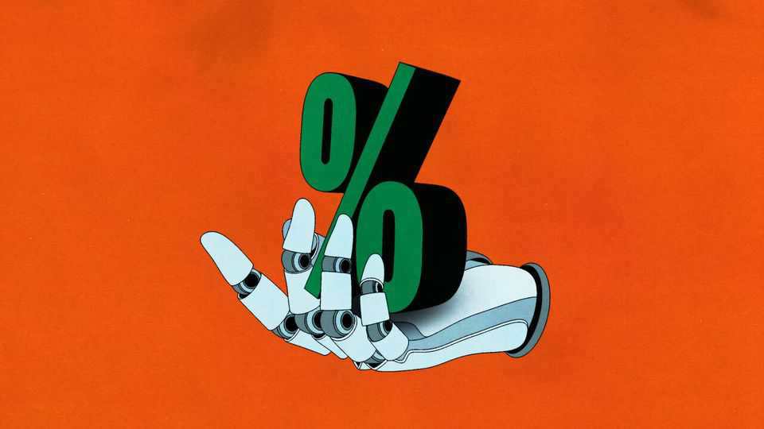

Will AI lower interest rates?
Kevin Warsh is drawing lessons about tech from Alan Greenspan—but selectively
June 25th 2026

AS CHAIRMAN OF the Federal Reserve in the 1990s, the jazz-loving Alan Greenspan earned a reputation as the maestro of monetary policy. Many of his colleagues believed that unemployment had fallen so low that it was certain to stoke inflation, and called for higher interest rates. But Mr Greenspan heard a different tune. From anecdotes about retailers tracking inventories by satellite or airlines using computers to adjust fares to match demand, he inferred that an IT-driven productivity boom was taking hold before it appeared in official statistics. The economy could thus grow faster without stoking inflation. He held rates steady for much of 1996 and 1997, trusting his inference over economic models. For a time, it worked.
Kevin Warsh, the Fed’s new chairman, has cast himself as Mr Greenspan’s heir. In his telling, artificial intelligence will expand supply and lower costs, allowing the economy to grow faster with less inflationary pressure. He, too, thinks the productivity statistics will arrive late. In an interview last December Mr Warsh praised Mr Greenspan for forming his views “from anecdotes and rather esoteric data”, arguing that when the data and the anecdotes diverge, central bankers should trust the latter. He sees the “excitement” in the eyes of chief executives as evidence that a productivity revolution is afoot. This forms part of Mr Warsh’s broader case, disputed by many of his colleagues: that AI is a disinflationary force, and that it calls for lower interest rates. Has Mr Warsh drawn the right lesson from his hero?
In the near term the effect of AI on rates comes down to a race between supply and demand. For now, demand is winning. Debt-fuelled spending on data centres, chips and power plants has surged. A stock-market bull run makes the share-owning public feel rich, boosting consumption even as income growth slows. As Austan Goolsbee of the Chicago Fed has warned, “the bigger the hype, the more rates may need to rise to prevent overheating.”
The Fed’s new conductor can hear the loud brass of demand. His bet is that the quieter strings of supply will soon join in. As firms reorganise work around AI, the same workers and machines should produce more, cutting unit costs and expanding the economy’s capacity. Yet even a supply-side transformation may not engender the lower rates Mr Warsh expects. That is because higher productivity raises real incomes, stirring fresh demand of its own and leaving the near-term effect on rates far from certain.
A related, longer-term force also points towards higher rates. If AI causes faster economic growth and higher future incomes, it is also likely to lift the “neutral rate” (r-star for short), the real interest rate at which monetary policy neither heats nor cools the economy. The intuition is familiar: a student expecting a fat salary after graduation is willing to take on debt today. Likewise, households borrow against higher future incomes and firms invest more as expected returns rise. Both raise demand for capital, increasing the interest rate needed to balance saving and investment. Recent work by Lukasz Rachel of University College London estimates that AI could lift r-star by around one percentage point. If he is right, a return to the pre-pandemic world of ultra-low interest rates is unlikely, even once supply catches up with demand.
Would the same conclusion hold in a world of benign superintelligence, where hyperproductive AI allows humans to pursue a life of leisure? In principle, yes. Explosive growth would lead people to expect booming future income—and so spend more today. If instead AI starts looking like an existential threat to humanity, why save for a future that may not arrive? Either way, rates must rise steeply to coax people into saving.
Some forces could pull r-star down. If superintelligence commoditises knowledge work and stiffens competition, corporate mark-ups, profits and expected returns could shrink, weakening demand for investment. Faced with upheaval in the labour market, households may build precautionary savings rather than borrow against a brighter future. Widespread displacement of jobs could push the neutral rate lower still. If less income flows to workers and more to owners of capital, aggregate spending may weaken, since the rich save more of each additional dollar they receive. Redistribution could offset some of this by directing income back towards households more likely to spend it. Without that, the result might well be a savings glut even as productive capacity soars—secular stagnation born of abundance at the top.
That all these outcomes are at least conceivable suggests that Mr Warsh would be wise to approach the question of AI and rates with humility. Even if the AI revolution proves as revolutionary as the technology’s boosters insist, it could push rates in either direction, depending on how precisely its gains filter through the economy and who captures them. The range of scenarios also points to the limits of historical analogy. AI may be anything but an ordinary technology.
And even if history of the 1990s does repeat itself, Mr Greenspan’s record contains a second movement which Mr Warsh seems not to have heard. The late Fed chair noticed the productivity boom before others, but then came to fear the demand it unleashed. In 1996 he warned of “irrational exuberance” in asset prices. Once the boom was well under way, Mr Greenspan was warning that faster productivity would create “even greater increases in aggregate demand than in potential aggregate supply”. In response the Fed raised rates six times between June 1999 and May 2000. Even so, it was already behind the beat. By early 2000 inflation had reached its highest level in almost a decade; the asset bubble burst soon afterwards. Mr Warsh may have learned the first part of the maestro’s score. He should listen carefully to the coda.■
Subscribers to The Economist can sign up to our Opinion newsletter, which brings together the best of our leaders, columns, guest essays and reader correspondence.